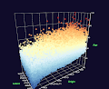
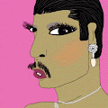
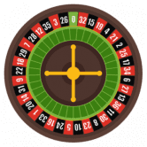
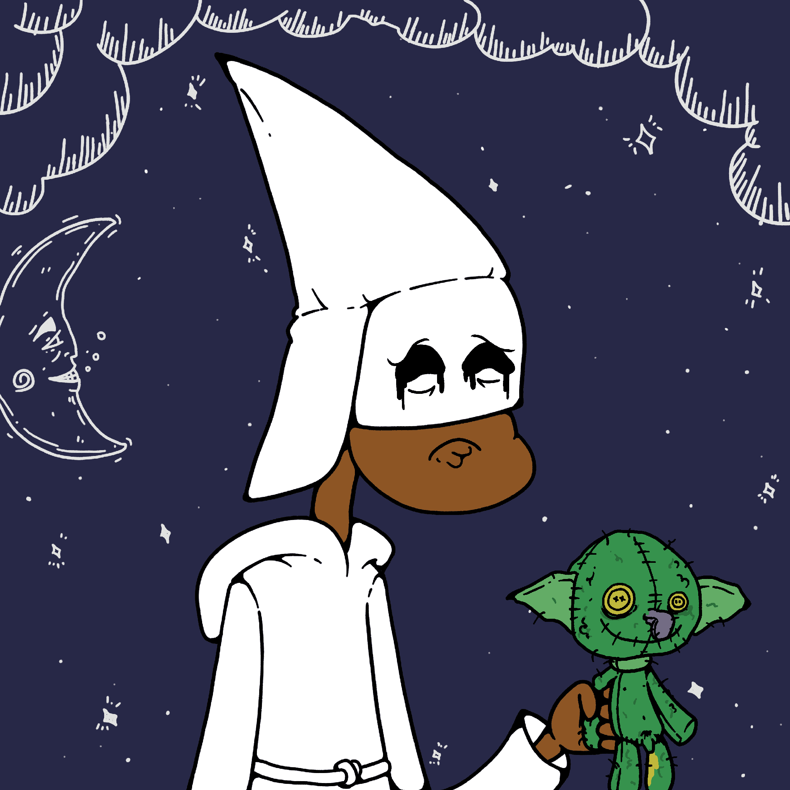

D-DIVIDENDS D-Dividends 是在 Tron 区块链上运行的智能合约，源代码经过验证，可在此处查看。任何人都不能修改源代码或删除智能合约。这意味着 D-Dividends 是完全去中心化和自治的，D-D
Daikiri Finance Daikiri 是一个多链 DeFi 应用平台，具有一组协议，旨在引导下一阶段的 DeFi 采用，并建立区块链所需的基础设施，以将流动性、创新和采用引入其生态系统和社区。Da
Daily Yields 每日收益基于保持我们代币的有用性。因此，您的投资增加的 DAILY YIELDS 代币流通量越大。每日产量统计质押 BNB 每日质押奖励 7% BNB 20 天 140%（含本金）质押 BNB 并获
DailyTron 通过 DailyTron.net 每天赚取 5% 的投资回报率20 天获得 100% 的投资并永远持续下去。智能合约已在 Tronscan 上 100% 验证。最低存款 50 TRX8级传销推荐系统15% 推荐奖励再投资以
Dan Hawk Photo Editions 由Dan Hawk在ERC 1155合同上铸造的多版本。 Dan Hawk Photo Editions NFT - 常见问题（FAQ） ▶ 什么是丹鹰照片版？ Dan Hawk Photo Editions是NFT（不可替
DAO Avatars Moonopolis - City DAO阿凡达月亮元界 这是管理一个城市在元界并获得超过10个收入来源。 DAO Avatars可以访问10多种收入来源： 💎身份证销售。DAO会员从出售
Dapper Space Collective NFT最DAPPER私人会员俱乐部7777独特的Dapper NFT位于TERRA 1上，这是一艘MSK-1级安全轻巡洋舰。仅对Dapper Space C
Dark Forest v0.6 - Valhalla 奖励行星NFT授予黑暗森林v0.6的获奖者。 黑暗森林 v0.6 - 瓦尔哈拉 NFT - 常见问题（FAQ） ▶ 什么是黑暗森林 v0.6 - 瓦尔哈拉？ 黑暗森林 v0.6 - 瓦尔哈拉是一
Dark Matter DeFi Boxed Generals 暗物质DeFi Boxed Generals在过去7天内售出2次。Dark Matter DeFi Boxed Generals的总销量为27.45美元。一个暗物质DeFi Boxed Generals NFT的
Dark Pepes by DigitalApe_Art 独特的黑暗佩佩的集合。 独特的黑暗佩佩的集合。 DigitalApe_Art NFT的Dark Pepes - 常见问题（FAQ） ▶ DigitalApe_Art的Dark Pepes是什么
DASH Token DASH 是一种与 TronDash.com 相关联的通货紧缩代币，这是一种创新实用程序，可让您在使用 Tron 区块链的最流行的 dApp 上查看您的 div 收入。TronDash 的流动性农场是从 TronDash
DashBank 通过将您的 DASH 存储在 DashBank 中被动赚取 div 存款/取款收取 10% 的交易费用，然后分配到股息池Dash让您可以自由地以任何方式转移资金。Dash以不到一美分的
 Data Poets Viz Data Poets Viz 是一系列显示数据可视化的令牌，由我根据我作为 Web 3.0 领域的独立开发人员在整个旅程中收集的数据创建。 数据诗人可视化 NFT - 常见问题解答（FAQ）
 Daughters of Rainbow NFT Collection 一个1，523件NFT项目是由一对酷儿艺术家夫妇Norman Normal x Yankong创作的。 Rainbow NFT系列的女儿将成为NFT世界中独一无二的存在。我
David Ariew X Tatler China TR Lab与Tatler中国和艺术家David Ariew合作，很高兴地宣布David的NFT艺术品Fractal Monarch的在线销售。这次
 Decentral Labs Roulette 轮盘赌公平游戏应用程序，接受美元和其他代币进行投注。完整的去中心化轮盘赌应用。所有游戏逻辑都在智能合约内。 Web UI 可以在 github 页面等静态页面上 100% 运行
Decentralized Identity ICPA Digital Identity -基于通用开放标准的分散式身份解决方案。使政府能够提供为人们设计的去中心化身份。立即了解更多信息我们正在为人员、组织和设备构建一个开源
Defily Finance Defily 是 KardiaChain 上的第一个跨链去中心化金融项目，它将很快连接到 Ethereum、Binance Smart Chain、Harmony、Avalanche 和 Tom
 Definitely not a Kult 绝对不是 Kult 统计数据 创建于 3 个月前，509代币供应，5% 费用 在过去的 7 天里绝对没有售出 Kult。 我们不是 KULT！但你可以为事工牺牲你宝贵的东

 。投资最低100美元。 您将每天获得 1 美元，直到您投资的 300%。 100% 去中心化智能合约。")


 旨在以 Fantom Opera 网络 (FTM) 的速度和安全性创造可靠和可持续的收益。")